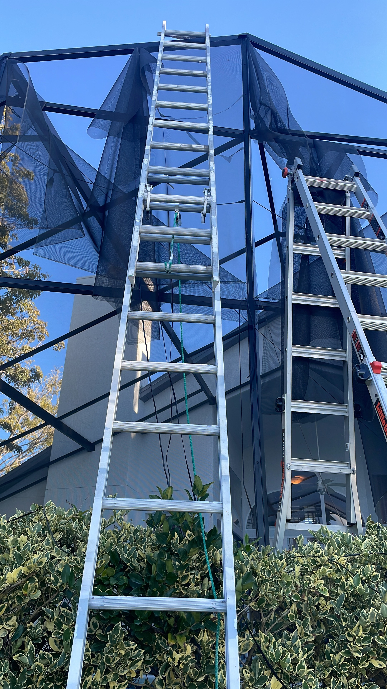
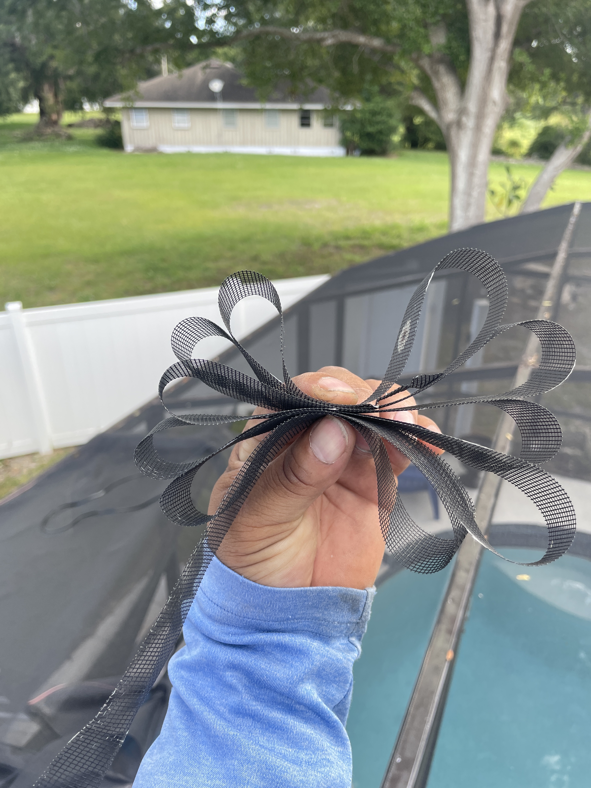

Fast · Clean · Professional
We replace torn, sagging, or damaged screens quickly and professionally. Restore your enclosure’s appearance, protection, and functionality.
Simple Screen Service provides professional screen repair for homeowners, HOA communities, apartment complexes, and property management companies across Central Florida. We handle everything from single panel replacements to large-scale re-screening projects for multi-unit properties, delivering consistent quality and fast turnaround.
Damaged screens allow insects, debris, and weather to enter your outdoor space. Our team replaces damaged panels with high-quality materials for a clean and secure finish.




We specialize in repairing patio screens, pool enclosures, and lanai structures in Orlando, Kissimmee, Clermont, Winter Garden, Windermere, and surrounding areas. Our screen repair services restore protection, improve appearance, and extend the life of your enclosure.
Most screens last 8–12 years depending on exposure.
Yes, we can replace individual damaged panels.
Most repairs are completed same-day or within 48 hours.
Our team provides professional screen enclosure services across:
Call (407) 405-5790 or request your free estimate online. We respond quickly and provide reliable service across Central Florida.
Request Free Estimate